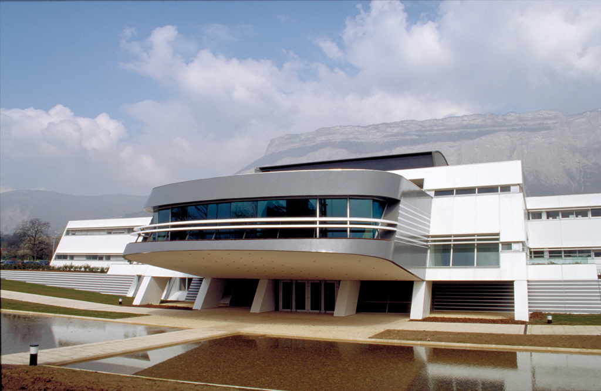
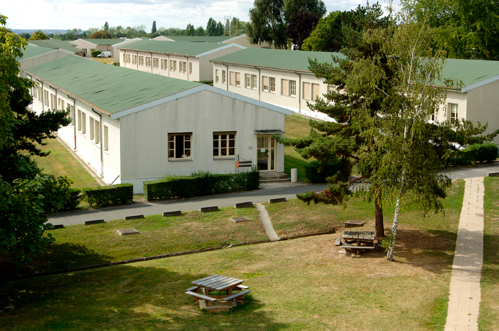

L'histoire
Lors d’un cocktail, une personne dialogue avec un petit groupe. Soudain, c’est à vous qu’elle s’adresse. Vous engagez la conversation. Facile ? Des millions d’années d’évolution ont pourtant été nécessaires pour que votre cerveau adopte ce comportement social basique!
Inria Bordeaux

En 1950, Alan Turing proposa un test d’intelligence pour les machines. Il pensait que les progrès de l’informatique permettraient de le satisfaire en cinquante ans. Même si les avancées de l’intelligence artificielle ont été remarquables, aujourd’hui, aucune machine n’a encore réussi le test.
Inria Sophia

La vision binoculaire humaine intègre une perception du relief. Chaque œil voit une image légèrement différente, et c'est à partir de ces deux images correspondant à des points de vue légèrement décalés que le cerveau reconstruit une information de profondeur.
Inria Rocquencourt
BIP est le premier robot marcheur anthropomorphe: il est doté de jambes, d'un bassin et d'articulations dont la morphologie ressemble à celle d'un être humain.